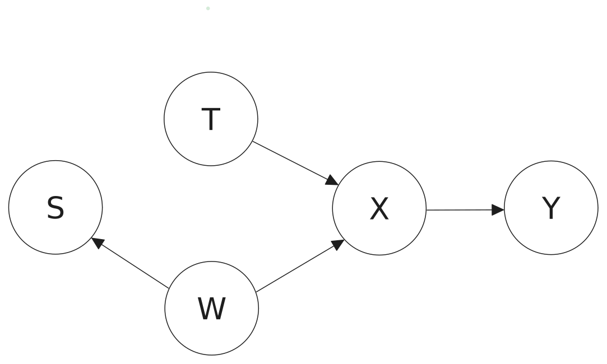
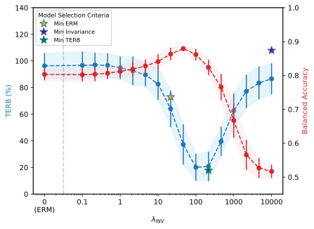
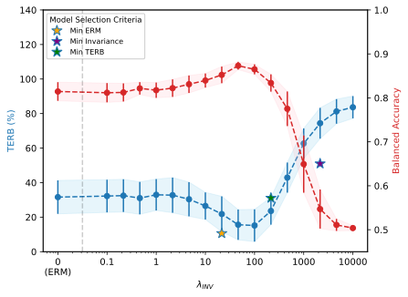

Unifying Causal Representation Learning with the Invariance Principle
Many causal representation learning methods are really aligning to data symmetries — invariances that need not be causal
Causal representation learning (CRL) aims at recovering latent causal variables from high-dimensional observations to solve causal downstream tasks, such as predicting the effect of new interventions or more robust classification. A plethora of methods have been developed, each tackling carefully crafted problem settings that lead to different types of identifiability. These settings are widely assumed important because they are often linked to different rungs of Pearl’s causal hierarchy, even though this correspondence is not always exact. This work shows that, instead of strictly conforming to this hierarchical mapping, many causal representation learning approaches methodologically align their representations with inherent data symmetries: identification of causal variables is guided by invariance principles that are not necessarily causal. This result lets us unify many existing approaches in a single method that can mix and match different assumptions — including non-causal ones — based on the invariance relevant to the problem at hand. It also significantly benefits applicability, which we demonstrate by improving treatment effect estimation on real-world high-dimensional ecological data.
Introduction
Causal representation learning (CRL) posits that high-dimensional perceptual data can be described through a simplified latent structure of a few low-dimensional, causally-related variables (Schölkopf et al. 2021). Many existing CRL approaches carefully formulate their problem settings to guarantee identifiability and justify their assumptions within the framework of Pearl’s causal hierarchy — labelling themselves observational, interventional, or counterfactual CRL.
Yet several lines of work resist this filing. Temporal CRL assumes a trajectory is “intervened” on, but noise variables are not resampled (so it is not a classical intervention) and non-intervened variables can still drift under the default dynamics (so it is not a counterfactual) (Lippe et al. 2022). Domain generalization (Krueger et al. 2021; Arjovsky et al. 2020; Ahuja et al. 2022) and some multi-task setups (Fumero et al. 2024) are framed as informally related to causality, with the precise relation left unstated.
This paper contributes a unified framework for many of these CRL works through the lens of invariance (Peters et al. 2014). The central observation is that many CRL approaches share a methodological core — aligning the representation with known data symmetries — and differ mainly in how the invariance principle is invoked.1
1 The paper leaves out settings involving discrete variables and finite-sample guarantees, which the authors note as interesting future work.
How invariance, not causality, drives identification
The argument has a clean logical shape. Identification of latent variables is shown to originate from data subsets carrying an inherent equivalence relation — typically known a priori. Making that relation explicit does three things at once.
It clarifies how seemingly different categories of CRL relate, since they turn out to share the same identification mechanism. It permits mixing multiple invariance relations in a single estimator. And it exposes a discrepancy the hierarchy hides: while learning the causal graph often requires genuinely causal assumptions (interventions, graphical constraints), the invariance principles used to identify the variables need not be causal at all. This last point links CRL outward to invariant training, domain adaptation, and geometric deep learning.
Two ingredients for identifiability. The framework isolates exactly two requirements: preserving data information (a sufficiency constraint, so the representation does not throw away what it must recover) and enforcing a set of known invariances (so the recovered block respects the symmetry the data exposes). Everything else is problem-specific bookkeeping.
A downstream causal task: ISTAnt
The practical payoff is shown on ISTAnt (Cadei et al. 2024), a real-world ecological benchmark for treatment-effect estimation built from video recordings of ant triplets with occasional grooming behaviour. The task is to learn a per-frame representation for behaviour classification (grooming or not) in order to estimate the Average Treatment Effect of an intervention — exposure to a chemical substance.
The treatment T and a high-dimensional observation X feed an outcome Y, with experimental settings W and the annotation flag S shaping the data — the causal scaffolding behind the ISTAnt estimation problem.

Different videos are treated as different experiments, and training adopts a domain-generalization objective — V-REx (Krueger et al. 2021) — whose risk-variance term enforces the invariance principle:
\mathcal{R}_{\text{V-REx}}(\mathbf{w} \circ g) = \underbrace{\lambda_{\text{INV}}\,\operatorname{Var}\!\big(\{\mathcal{R}_1(\mathbf{w} \circ g), \dots, \mathcal{R}_K(\mathbf{w} \circ g)\}\big)}_{\text{invariance}} + \underbrace{\textstyle\sum_{k \in [K]} \mathcal{R}_k(\mathbf{w} \circ g)}_{\text{sufficiency}}.
Sweeping the invariance weight \lambda_{\text{INV}} from 0 (plain ERM) to 10\,000, with 20 independent runs per setting, balanced accuracy first rises as adequate invariance pins down task-relevant latents, then falls once the sufficiency term is no longer balanced against the invariance term. The Treatment Effect Relative Bias (TERB) — the ratio between bias across treatment groups and the true average treatment effect — improves over the same range: on average, at \lambda_{\text{INV}} = 100 with experiment subsampling, TERB drops to 20\%, down from 100\% for ERM.

From the original paper (Yao et al., 2025). Highlights added for this walkthrough.
Step 01 — No invariance is plain ERM At \lambda_{\text{INV}} = 0 the objective reduces to Empirical Risk Minimization. With no pressure to align across experiments, the representation soaks up spurious experiment-specific signal: balanced accuracy is unremarkable and the TERB sits near 100\%, meaning the estimated treatment effect is essentially as biased as the effect it is trying to measure.
Step 02 — Moderate invariance pins down the right latents As \lambda_{\text{INV}} grows, the risk-variance term forces the encoder onto the latents that behave the same across experiments — the invariant block. The TERB falls sharply, reaching 20\% around \lambda_{\text{INV}} = 100: a fivefold reduction in treatment-effect bias purely from enforcing a known invariance, with no change to the causal estimand.
Step 03 — Too much invariance starves sufficiency Push \lambda_{\text{INV}} higher still and the balance tips the other way: the invariance term dominates the sufficiency term, the representation discards information it needs for the task, and balanced accuracy drops back down. The sweet spot is a balance between the two ingredients the framework names — invariance and sufficiency — not the maximum of either.
The same sweep run under position sampling tells a consistent story — TERB and balanced accuracy trade off against \lambda_{\text{INV}} in the same direction — and the authors report that selecting models by a naive TERB estimate on a small, heterogeneous validation set is a reasonable (if imperfect) criterion. Toggle the two sampling regimes below.

From the original paper (Yao et al., 2025).
A non-causal invariance suffices: the “nintervention” ablation
To make the central claim sharp, the paper runs a synthetic ablation on a three-variable chain \mathbf{z}_1 \rightarrow \mathbf{z}_2 \rightarrow \mathbf{z}_3 and introduces a nintervention: a transformation with the distributional footprint of an intervention on \mathbf{z}_2 — keeping the marginals of \mathbf{z}_1, \mathbf{z}_3 fixed — but cut from any causal meaning, since both the incoming and outgoing edges of \mathbf{z}_2 are severed.
Using a linear-Gaussian additive-noise model with a nonlinear (3-layer invertible MLP) mixing, and enforcing the marginal invariance with an MMD loss (as the interventional CRL works do (Ahuja et al. 2023; Zhang et al. 2024)), the framework predicts \mathbf{z}_1 and \mathbf{z}_3 should be block-identified while \mathbf{z}_2 should not. Kernel-ridge regression between the recovered block [\hat{\mathbf{z}}_1, \hat{\mathbf{z}}_3] and the ground truth confirms it:
| Latent | R^2 (block-identification) |
|---|---|
| \mathbf{z}_1 | 0.863 \pm 0.031 |
| \mathbf{z}_3 | 0.872 \pm 0.035 |
| \mathbf{z}_2 | 0.065 \pm 0.017 |
The lesson is direct: existing interventional-CRL identification is driven by the distributional invariance, and that invariance can arise from a transformation with no valid causal interpretation at all.
Conclusion
Across a broad range of CRL methods, identifiability rests on two ingredients — preserving data information and enforcing a set of known invariances — and the invariances doing the work need not be causal. Reframing CRL this way clarifies the role of causal assumptions in latent-variable discovery and shifts the focus from narrow, often impractical settings toward a general recipe in which a practitioner specifies the invariance relevant to their problem (Schölkopf et al. 2021). The same recipe broadens applicability — most visibly by cutting treatment-effect bias on real ecological data (Cadei et al. 2024) — and draws a clean line between the assumptions needed to learn a causal graph and those needed to identify causal variables (Pearl 2009). References appear in the margin and are collected below; a copyable BibTeX entry for this paper is generated automatically.
Citation
@inproceedings{yao2024,
author = {Yao, Dingling and Rancati, Dario and Cadei, Riccardo and
Fumero, Marco and Locatello, Francesco},
title = {Unifying {Causal} {Representation} {Learning} with the
{Invariance} {Principle}},
booktitle = {International Conference on Learning Representations
(ICLR)},
date = {2024-09-04},
doi = {10.48550/arXiv.2409.02772}
}